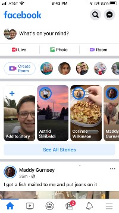

Amazon
Visual Hierarchy
Amazon.comAmazon obviously wants its users to buy its products. Recently Amazon redesigned the layout of its page to focus on the Amazon exclusive products such as, Fire TV and the Echo product line. Your eyes are immediately drawn to these products. The next thing that you may notice is the search bar that takes up the top portion of the screen.
PhotographyMad
Contrast
photographymad.com
The high contrast of the bright green bar against the blue bar beneath it allow Photography Mad to grab your attention. It is obvious that the bright green bar is trying to communicate something the sites designers what the viewer to notice
White Space
facebook.com FaceBook is famous for its lack of color and its focus white space. When using either the desktop or smartphone app the use of white space is obviously deliberate. FaceBook is an information giant and its layout emphasizes this. The whitespace allows you to focus on the images, comments, and “likes” of the posts in the newsfeed.